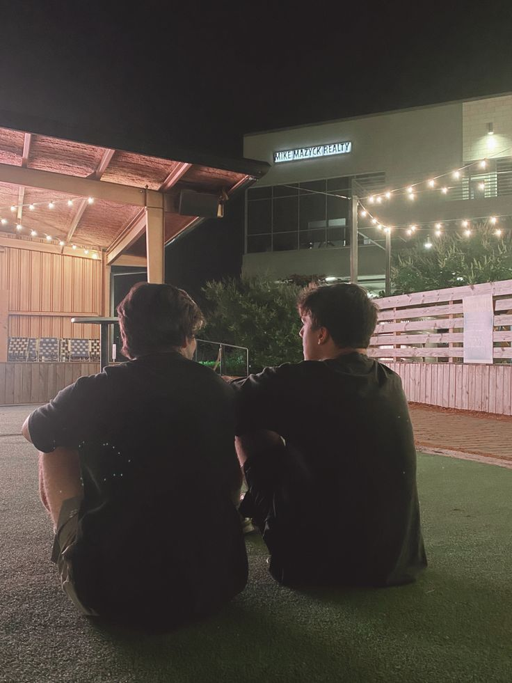
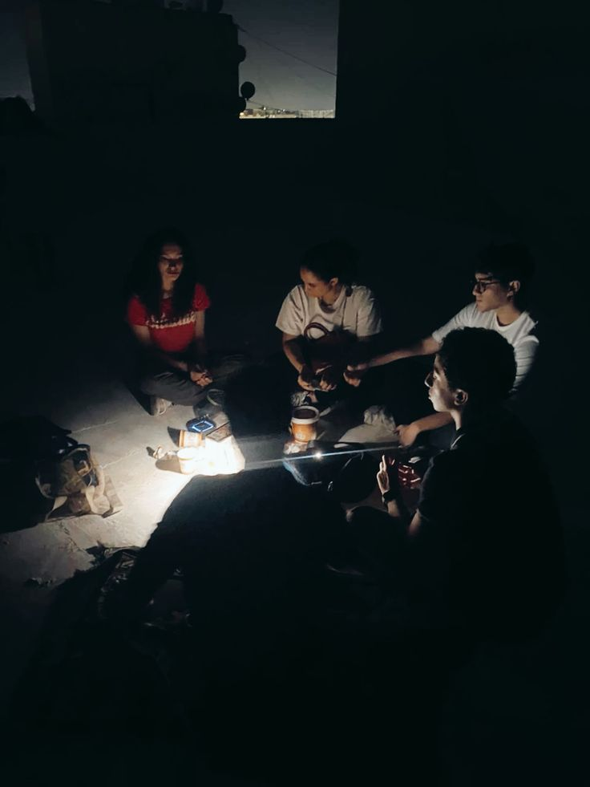
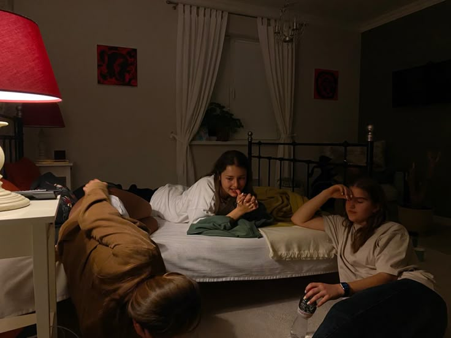
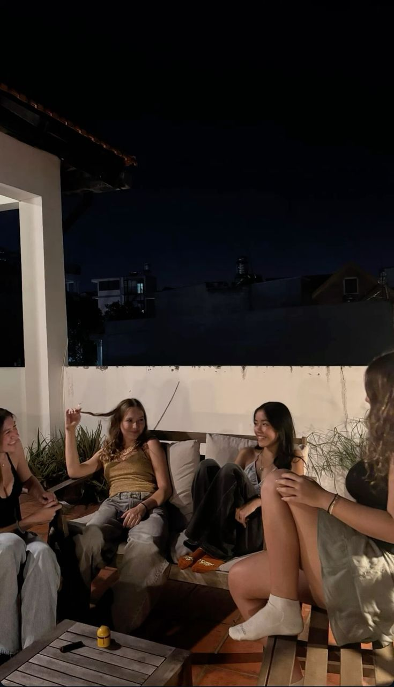

you can't talk to your twin about something that matters without it becoming something else entirely.
i called because i needed to talk to someone who would understand the specific anxiety of being an infj with too many feelings and not enough outlets for them. which is basically what infjs are. so really i called the one person in my circle who speaks that particular frequency without me having to translate.
we were supposed to talk about the pressure thing. the way every small failure feels like a referendum on whether you're actually capable of the things you're trying to do. the way a setback from the startup community felt like rejection from the entire concept of entrepreneurship. the small, loud voice in your head that says maybe you're not actually cut out for this.




but then she started talking about something she's going through and it became about her and i was grateful for the redirection. at least someone else's problems were in the room with us. at least i wasn't alone in the heaviness.
except then she asked me directly what was going on with me and i had to choose between being honest and being a good friend and those things felt mutually exclusive for a second. being honest meant saying: i'm actually not okay. i'm tired of being talented enough to be expected to do remarkable things but not quite remarkable enough yet to actually do them. being a good friend meant saying: it's fine. i'm working through it.
she called me on it anyway. not in a mean way. in the way that only people who know your entire operation can do. we ended up just sitting in the honesty for a while. acknowledged that it was hard. that we were both tired. and then talked about something completely stupid to break the tension. that's the thing about having a twin. you can't fully hide. they know the shape of you too well.
← Back to Blog